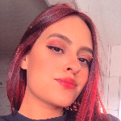

Tamires S. Nobrega
Designer Gráfica e estudante de Análise e Desenvolvimento de Sistemas


Sobre
Oi! Meu nome é Tamires Santos Nobrega, seja Bem-Vindo(a)!
Iniciei no universo do Design Gráfico em 2018 estudando na instituição Universidade Paulista UNIP, desde então tive a certeza da minha verdadeira paixão na área. Atualmente decidi fugir um pouco da minha zona de conforto e conhecer coisas novas, hoje curso dois novos cursos, ensino superior em Ciências Biomédicas (Biomedicina) e também, ensino superior em Análise e Desenvolvimento de Sistemas, a fim de aperfeiçoar os meus conhecimentos. Estou sempre em busca de inspirações e além de trabalhar com prazos, gosto de dar meus 100% em todos os meus projetos